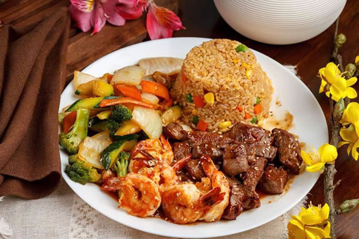
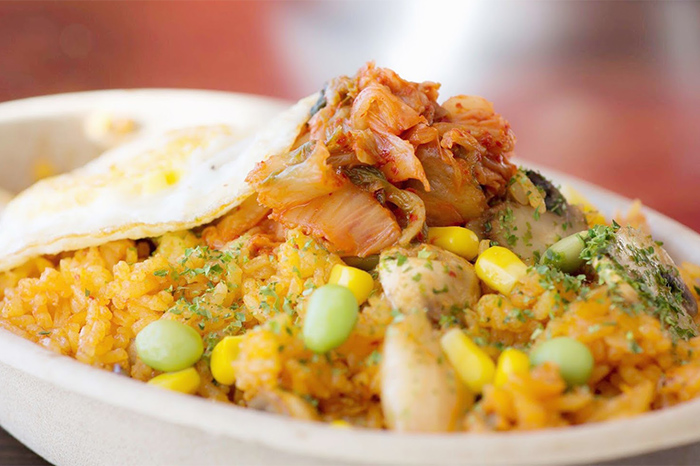
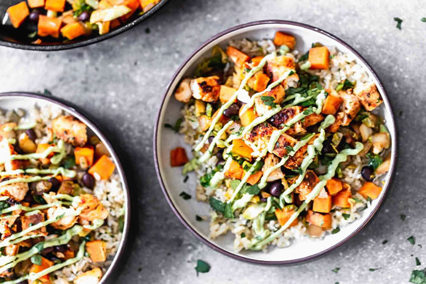

Recommended Restaurant 1: Happy Bowl
Location: 1201 W Gate City Blvd #102 | Hours: 11 AM - 9:30 PM | Specialties: Japanese Cuisine



Explore the best food spots near UNCG Petty building!
Are you a culinary adventurer in search of the perfect meal on campus?...
Look no further! I've curated a list of the most exceptional dishes that are sure to shake your taste buds.
From healthy bowls and refreshing smoothies to pizza and wings, this list has got you covered.
So, put on your foodie hat and let's dive into the delightful world of flavors!
BONUS: FLEX ACCEPTED AT ALL THREE RESTURANTS!
Location: 1201 W Gate City Blvd #102 | Hours: 11 AM - 9:30 PM | Specialties: Japanese Cuisine
Location: 1201 W Gate City Blvd | Hours: 7 AM - 9 PM | Specialties: Smoothies and Sandwiches


Location: 1101 W Gate City Blvd #201 | Hours: 1 PM - 10 PM | Specialties: Pizza and Wings